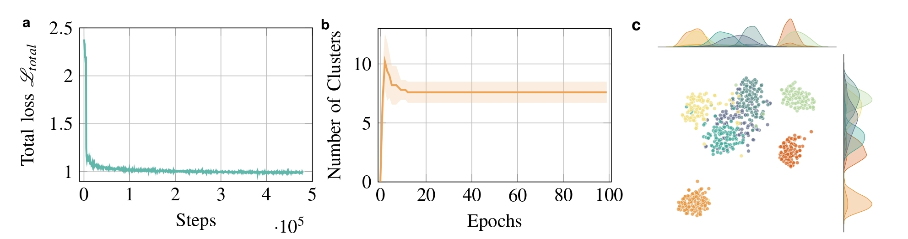
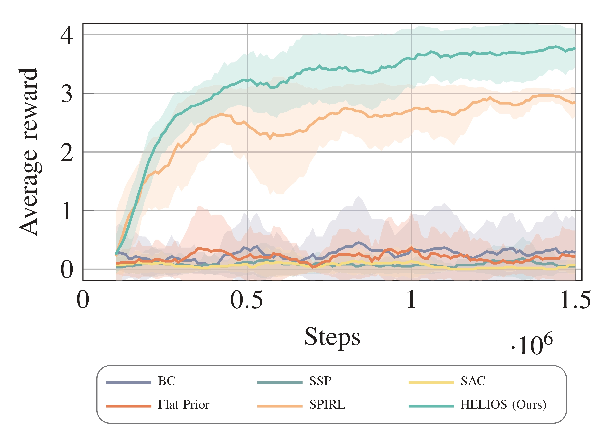
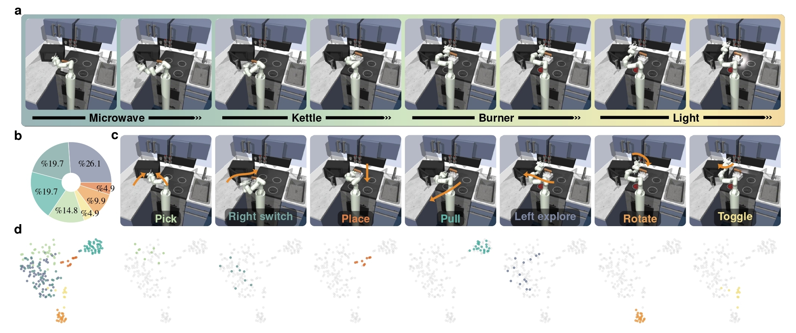

HELIOS
Framework Overview
The training process is divided into two phases. In Phase I, a VAE with GRU modules is used to pre-train a skill representation model from a dataset of action trajectories. The model leverages a DPM to capture the non-parametric nature of skill priors, aiding in learning precise action patterns and subsequent effective task representations. In Phase II, this pre-trained skill decoder and prior are deployed within a RL framework to address long-horizon manipulation tasks. Here, the upstream inference model uses soft actor-critic structure to learn specific task reasoning, ensuring the successful execution of complex, extended long-horizon tasks.

Quantitative Results
The evaluation of Bayesian non-parametric skill prior.
a, The total training loss \(\mathcal{L}_{total}\) observed during the skill prior pretraining phase.
b, The evolution of the number of generated clusters in the Bayesian non-parametric skill prior space throughout training.
We conduct at least five trials and report the mean and standard deviation (\(\mu\pm\sigma\)).
c, t-SNE projection of the DPM-based skill prior in the final epoch.
We train the proposed Bayesian non-parametric skill prior model as presented in Sec. IV-B.
To evaluate the training performance, we first examine the total regression loss during training, as depicted in Fig. 2a.
The training loss converges rapidly, stabilizing around a value of 1.0.
In Fig. 2b, we illustrate the evolution of the number of components in the Bayesian non-parametric skill prior.
Initially, the DPM starts with a single Gaussian component.
After each training epoch, the DPM uses buffered data collected during the epoch to adjust the number, shape, and density of components, adapting to the data representation.
In the early stages, when both the network parameters and the DPM still do not converge, the DPM may generate extra components, in some cases reaching up to 12.
As training progresses and data noise decreases, the DPM merges redundant components to optimize its objective, ultimately stabilizing around 6 - 8 components in the skill prior space.
Fig. 2c displays the t-SNE projection of the Bayesian non-parametric skill prior space after training.
The results indicate that our DPM-based prior model effectively identifies and clusters the underlying features in the data,
providing a well-structured skill prior space that can guide the decoder's action pattern learning and enhance subsequent downstream RL training for long-horizon manipulation.

Average reward of total long-horizon manipulation task.
In the Franka-Kitchen Benchmark, we use sparse rewards to train the agent, awarding a score of 1 only for successfully completed subtasks and 0 otherwise.
For each model, we run at least five trials, reporting the average reward and standard deviation (\(\mu\pm\sigma\)) for comparison.
In the subsequent experiments, we compare the downstream long-horizon task performance of our framework, HELIOS, to recent SOTA baseline models in our proposed RL manipulation tasks, as outlined below:
- Standard SAC: We train the agent from scratch using the SAC. This baseline assesses the benefits of leveraging prior experience.
- Behavioral Cloning (BC) We use a BC policy trained on the given dataset, then finetune it in the downstream tasks.
- Skill-Space Policy (SSP) This variation trains a high-level policy in the skill embedding space without using a skill prior, examining the role of a learned skill prior in enhancing downstream task learning.
- Flat Prior: This baseline learns a single-step action prior without GRU/LSTM modules in the backbone, which regularizes downstream learning as a form of temporal abstraction.
- Skill-Prior RL (SPIRL): This framework incorporates a skill prior within a hierarchical RL framework, similar to our approach, but models the skill prior as a single fixed Gaussian distribution. This SOTA framework assesses the impact of using a simpler, fixed skill prior as opposed to our adaptive, non-parametric approach.
As shown in Fig. 3, our proposed framework HELIOS substantially outperforms all baseline models in terms of average reward on long-horizon manipulation tasks. HELIOS quickly reaches a high average reward, stabilizing above 3.7 (with maximal 4.0), while other baselines either converge at lower reward values or exhibit slower progress. Notably, SPIRL performs better than some baselines due to its use of a skill prior, but it falls short compared to HELIOS, which leverages a more flexible Bayesian non-parametric skill prior modeled with DPM and MemoVB heuristics. This adaptive skill prior allows HELIOS to dynamically capture an optimal set of skills that are more expressive and well-suited for complex, long-horizon tasks. Although Flat Prior incorporates a trained skill prior module with a simple fully connected backbone, this design fails to effectively capture the underlying skill structure and context, leading to poor performance in downstream tasks. This highlights the contribution of our proposed GRU-based skill prior network. Without the guidance of skill prior, the SAC, BC, and SSP models struggle in this complex, sparse-reward, long-horizon task environment, achieving an average reward of less than 0.5. By utilizing the DPM-based skill prior, HELIOS benefits from efficient exploration and the ability to recombine learned skills in new ways, essential for tackling unseen task sequences in long-horizon scenarios. This structured and adaptable skill space enables faster and more stable convergence, highlighting HELIOS's superior performance in the challenging Franka Kitchen environment.

Qualitative Results
Long-horizon manipulation task performance.
a, Snapshots of each sub-task, demonstrating that the agent efficiently completes all assigned subtasks.
b, The average skill ratios applied across the entire task, based on the results from at least five trials.
c, Snapshots of each primitive skill motion. Our Bayesian non-parametric prior captures seven base skills: "pick", "place", "pull", "rotate", "toggle", and "explore" movements (both left and right directions).
d, t-SNE projections of each primitive skill motion, showing the re-encoded skills through the pre-trained skill encoder \(q(z|\mathbf{a}_i)\) and their corresponding assignments in the Bayesian non-parametric knowledge space.
Figure 4a demonstrates the rendering snapshots of our proposed agent performing a sequence of subtasks in the Franka Kitchen environment, including manipulating the microwave, kettle, burner, and light switch.
The images demonstrate that the agent completes all assigned subtasks in the scene, highlighting its ability to handle complex, multi-step, long-horizon tasks.
The renderings of these subtasks reflect the agent's capability to utilize the pre-trained Bayesian non-parametric skill prior for efficient skill selection and execution. This showcases HELIOS's strength in combining learned skills to solve sequential subtasks in the long-horizon manipulation scene.
The pie chart in Figure 4b illustrates the distribution of skill ratios utilized throughout the long-horizon task sequence, averaged over at least five trials and color-coded by respective skills. In our task dataset, the Bayesian non-parametric skill prior captures an average of seven primitive skill motions, with snapshots of each skill depicted in Figure 4c.
These skills include "pick" (14.8%), "place" (4.8%), "pull" (19.7%), "rotate" (9.9%), "toggle" (4.9%), and "explore" in both left (26.1%) and right (19.7%) directions.
Together, these skills form the fundamental building blocks of the agent's actions, enabling efficient recombination to perform long-horizon tasks.
By leveraging the pre-trained Bayesian non-parametric skill prior, the agent effectively utilizes these skills to manage complex object manipulations, showcasing the prior's capability to encode and generalize key motion behaviors.
Additionally, Figure 4d presents the t-SNE projections of each primitive skill motion in the latent space, revealing well-defined clusters of re-encoded skills generated by the skill encoder \(q(z|\mathbf{a}_i)\) from phase I. Each cluster corresponds to a distinct skill, highlighting the ability of the Bayesian non-parametric prior to group similar actions while maintaining clear boundaries between different skill types.
This structured latent space demonstrates the prior's strength in capturing complex, multi-modal skill distributions.
Such precise clustering is essential for guiding the agent in downstream RL tasks, enabling efficient exploration and robust action pattern inference.
